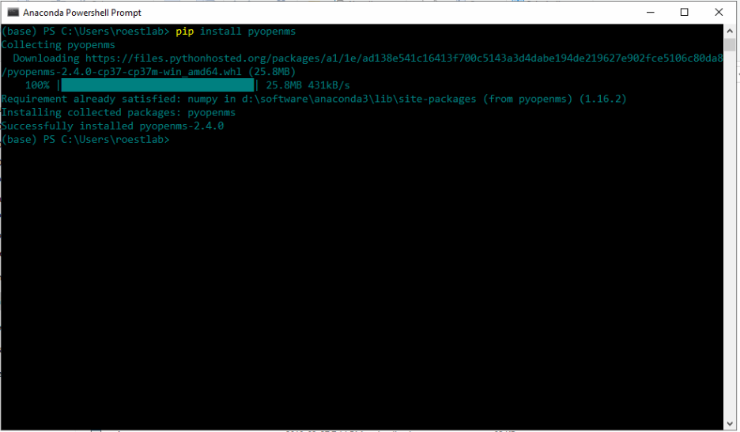
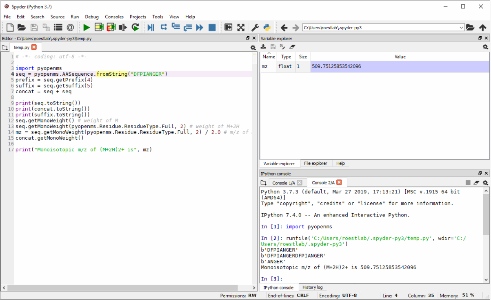

pyOpenMS Installation¶
Binaries¶
Spyder¶
On Microsoft Windows, we recommend to use pyopenms together with Anaconda and the Spyder interface which you can download from the Official Anaconda repository. After installation, select the “Anaconda Powershell Prompt” from the start menu and enter the following command:
pip install pyopenms
which should result in the following output:
Once successfully installed, you can open the “Spyder” graphical user interface and pyopenms will be available:
Note the console window (lower right) with the import pyopenms command,
which was executed without error. Next, the Python script on the right was
executed and the output is also shown on the console window.
You can now use pyopenms within the Spyder environment,
either moving on with the pyOpenMS Tutorial
or familiarize yourself first with the Spyder environment using
the Online Spyder Documentation.
Command Line¶
To install pyOpenMS from the command line using the binary wheels, you can type
pip install numpy
pip install pyopenms
We have binary packages for OSX, Linux and Windows (64 bit only) available from PyPI. Note that for Windows, we only support Python 3.5, 3.6 and 3.7 in their 64 bit versions, therefore make sure to download the 64bit Python release for Windows. For OSX and Linux, we additionally also support Python 2.7 as well as Python 3.4 (Linux only).
You can install Python first from here,
again make sure to download the 64bit release. You can then open a shell and
type the two commands above (on Windows you may potentially have to use
C:\Python37\Scripts\pip.exe in case pip is not in your system path).
Source¶
To install pyOpenMS from source, you will first have to compile OpenMS successfully on your platform of choice and then follow the building from source instructions. Note that this may be non-trivial and is not recommended for most users.